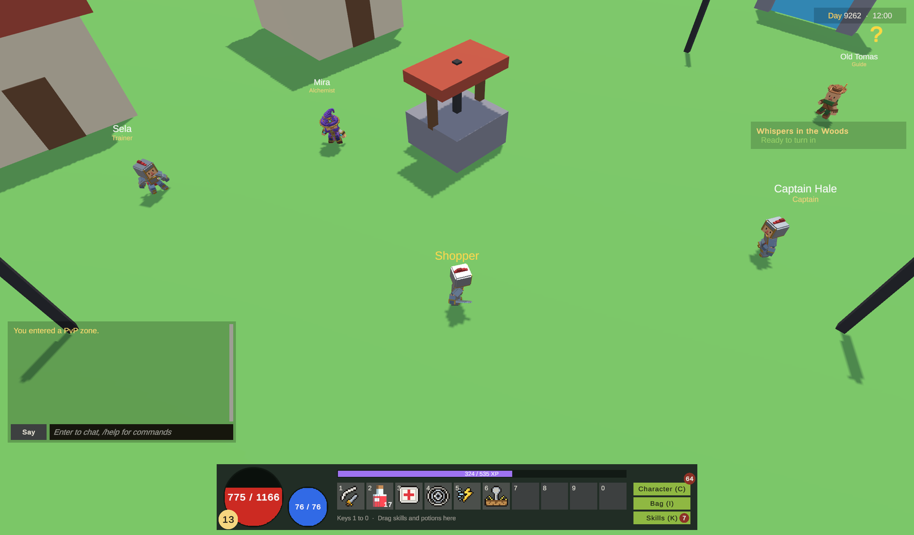

Day and night
The game has a clock that turns days into nights: the sun crosses the sky, a pale moon takes over at night, street lamps light up, and some monsters come out only by day or only by night. This page covers the clock settings, the scene components, night-only monsters, time conditions, and how it behaves in single player and MMO.
For the player

- The clock on the HUD, left of the icon bar at the top right, shows "Day" in yellow or "Night" in blue, and the hour, like
Day · 14:30. - By day the sun moves across the sky. At dawn and dusk the light and the sky turn orange. At night a dim blue moon lights the map, the ambient light drops and the sky darkens.
- Lamps, torches and lit windows turn on at night.
- Some monsters appear only by day or only by night. In the sample forest, mushrooms come out at night.
- The minimap darkens at night too, like the scene.
How the clock works
The game's hour comes from the real UTC time and the length of a game day (WorldClock). Every map server and every client computes the same hour by themselves, so nothing is sent over the network and every map agrees.
With the defaults, a game day lasts 48 real minutes: 30 game days per real day. Night runs from 20:00 to 06:00 game time.
Settings
In KitARPG > Game Settings, section Day and night (fields of GameInstance).
| Field | What it does | Default |
|---|---|---|
Day Minutes (dayMinutes) |
Real minutes a whole game day lasts. 0 stops the clock at Fixed Hour | 48 |
Day Start Hour (dayStartHour) |
Hour the clock starts at, to shift the days against real time | 8 |
Fixed Hour (fixedHour) |
Hour the clock shows when it doesn't run | 12 |
Night From (nightFrom) |
Night starts at this hour | 20 |
Night To (nightTo) |
Night ends at this hour | 6 |
All hours go from 0 to 24. A night that crosses midnight (Night From higher than Night To) is the usual case.
Turning off the Day and night module in Modules stops the clock: it is always Fixed Hour.
Every map server and client must use the same settings, or they disagree about the hour. They come from the same KitNetwork prefab, so a rebuild after a change keeps them in step.
Lighting a map: Day Night Cycle
Add a DayNightCycle component to an object in each outdoor map scene. It does nothing on a server without graphics.
| Field | What it does | Default |
|---|---|---|
Sun (sun) |
The directional light it moves and colors. Required | Empty |
View (view) |
Camera whose background color is the sky. Empty: the main camera | Empty |
Sun Color (sunColor) |
Light color by day | Warm white |
Sun Intensity (sunIntensity) |
Light intensity at midday | 0.9 |
Day Ambient (dayAmbient) |
Ambient light by day | Pale blue |
Day Sky (daySky) |
Sky color by day | Light blue |
Dusk Color (duskColor) |
Light color near dawn and dusk | Orange |
Dusk Sky (duskSky) |
Sky color near dawn and dusk | Salmon |
Moon Color (moonColor) |
Light color at night | Blue |
Moon Intensity (moonIntensity) |
Light intensity at night | 0.25 |
Night Ambient (nightAmbient) |
Ambient light at night | Dark blue |
Night Sky (nightSky) |
Sky color at night | Near black blue |
Heading (heading) |
Compass heading the sun rises from | 150 |
It writes the ambient sky, equator and ground colors of the scene's lighting settings every frame. The equator and ground colors you set in the scene are the daytime values.
Leave it out of indoor and underground maps. The sample's crypt has none and stays the same at every hour.
Lamps: Night Light
Add a NightLight component to lamps, torches and houses.
| Field | What it does | Default |
|---|---|---|
Lights (lights) |
Lights turned on at night and off by day | Empty |
Glow (glow) |
Objects shown only at night, like a lit window or a flame mesh | Empty |
The sample town has five.
Night and day monsters
On a MonsterSpawner, the When field (when) says when its monsters are out:
| Value | What it does |
|---|---|
| Always | Default. Always out |
| Day | Out by day, gone at night |
| Night | Out at night, gone by day |
The server checks every 2 seconds. When their time is over, the spawner's monsters leave, even in the middle of a fight. When their time comes back, a full group appears again.
Step by step: monsters that come out at night
- Open the map scene and select a
MonsterSpawner(or add one: Monster, Count, Radius). - Set When to Night.
- Press Play. To see it without waiting, set Day Minutes to 1 (a whole day per minute), or set Day Minutes to 0 and Fixed Hour to 22.
- Put Day Minutes back before building.
Time conditions
Quests, dialogues and NPC options can depend on the hour with the Time condition (TimeCondition). See Conditions and actions.
| Field | What it does | Default |
|---|---|---|
From Hour (fromHour) |
First hour, 0 to 23 | 0 |
To Hour (toHour) |
Last hour, exclusive, 1 to 24. Lower than the start wraps past midnight | 24 |
Real Time (realTime) |
Use the real time in UTC instead of the game's, for events on real days | Off |
Days (days) |
Real time only: days of the week. Empty is every day | Empty |
Examples: an NPC who only trades from 20 to 6 game time, or a weekend event with Real Time on and Days Saturday and Sunday.
Single player and MMO
The clock works the same in both. In MMO every map server and client agree because they all read the UTC time. A player whose computer clock is wrong sees a slightly different sky, but monsters follow the server's clock.
Tips
- For testing,
WorldClock.Shiftmoves the clock forward a number of hours on one machine. - A shorter day (Day Minutes 24) shows night more often; a longer one (120) makes it an event.
- Music doesn't change with the hour. Set a map's music in the Game Database (see Player settings).
Common mistakes
- The light never changes. The
DayNightCyclehas no Sun, the Day and night module is off, or Day Minutes is 0. - The indoor map goes dark at night. Remove its
DayNightCycle. - Night monsters never come. When is Night but Night From equals Night To, so there is no night.